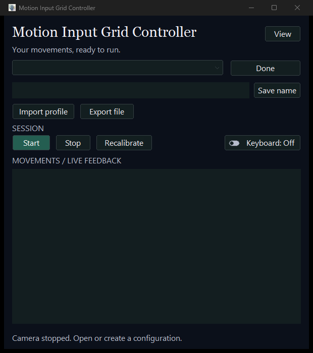
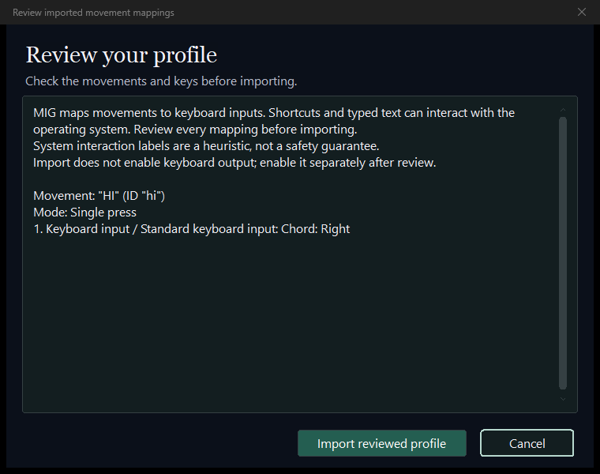
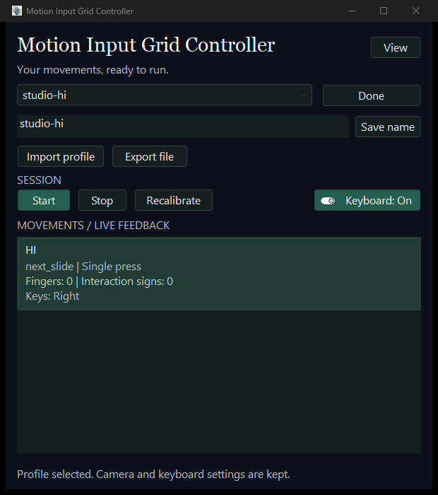

Passez de vos gestes aux touches
Téléchargez le Controller, importez votre profil et utilisez vos gestes dans vos applications.
Gardez le fichier mig-profile.json exporté depuis Studio.
Télécharger le Controller
Sous Linux, la sortie clavier nécessite X11.
1. Ouvrez le Controller

Lancez le fichier téléchargé. Sur Windows, le premier lancement indique où sera stocké le moteur local.
Alerte SmartScreen sur Windows ?
Vérifiez que le fichier provient de la release officielle et comparez son empreinte avec le fichier SHA256SUMS avant de l’ouvrir.
2. Importez votre profil

Cliquez sur Import profile, choisissez mig-profile.json et vérifiez les touches avant de valider.
3. Démarrez et testez vos gestes

Cliquez sur Start et testez le geste avec la sortie clavier désactivée. Activez-la ensuite et revenez à votre application.
Captures de l’application Windows. La disposition Linux peut différer.